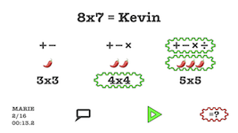
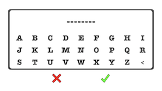
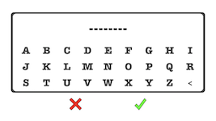

8x7 Kevin est un jeu de calcul mental.
On choisit le nombre d'opérations qu'on veut effectuer (3x3 = 9 opérations, 4x4 = 16 opérations, 5x5 = 25 opérations), la difficulté (1 piment = facile, 2 piments = moyen, 3 piments = difficile), les opérateurs utilisés. On peut aussi choisir un des 3 modes en bas à droite (normal, à trou, équation). Ensuite y a qu'à appuyer sur le triangle vert pour jouer.
Le nombre d'opérations réussies et le temps écoulé pour en arriver là s'affichent en bas à droite. A la validation de la page (check vert), on peut avoir le record pour cette configuration (le plus grand nombre d'opérations réussies et en cas d'égalité le temps le plus rapide). On pourra alors saisir son prenom ou autre (8 caractères max). Le record à battre pour la configuration courante s'affiche en bas à gauche. Si on abandonne (croix rouge), on revient simplement à la page d'accueil.
Sur la page d'accueil, on peut choisir d'afficher ou non des commentaires.


 
